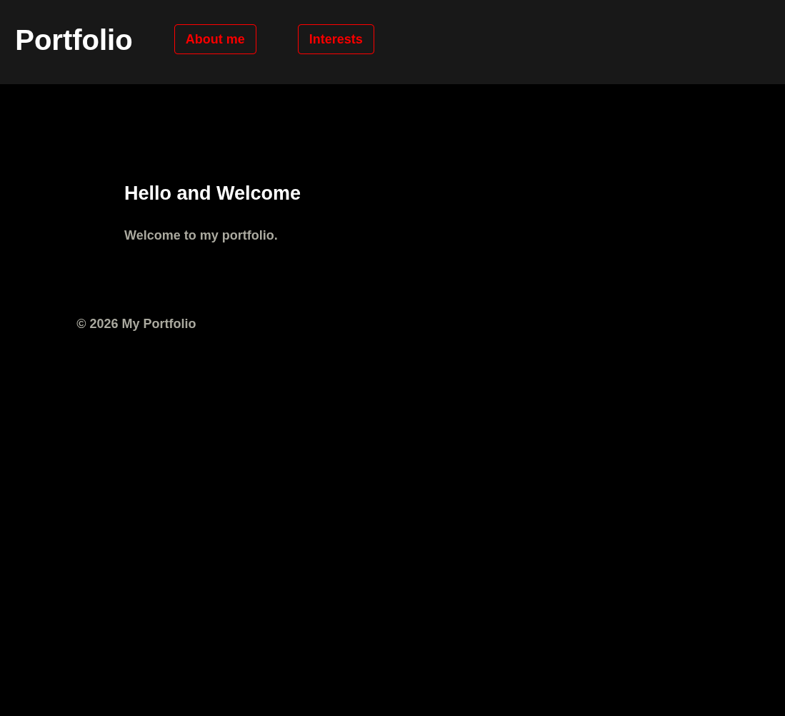
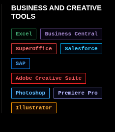
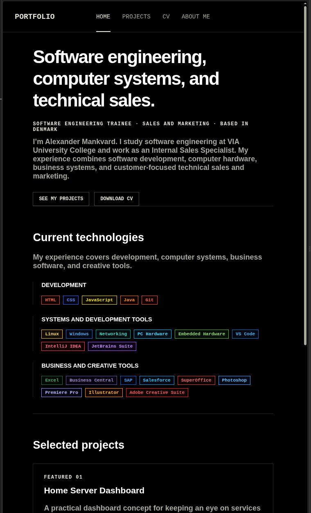
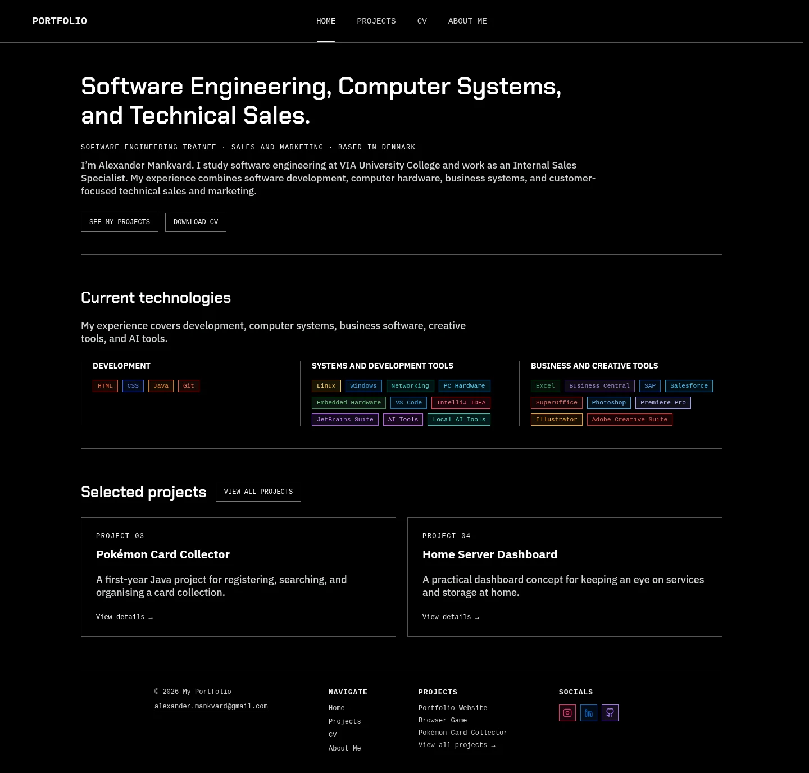

Building this portfolio
I started with three pages and kept adding to them as I learned more HTML, CSS, and JavaScript. I also edited the illustrations in Illustrator. These are the main steps, with screenshots and bits of code from along the way. The walkthrough ends with the final v1.0 website for the web course.
Back to projectsStep #01
The first three pages
The first screenshot shows the rough Home page: a grey banner, red links, and a lot of space that I had not worked out yet. I was trying different ways to place links and get the three pages connected.
I used the same stylesheet for all three pages. Home linked to About Me and Interests, and one CSS change could update the look of every page.
<link rel="stylesheet" href="styling.css">
<a href="about.html"><span>About Me</span></a>
<a href="interests.html"><span>Interests</span></a>The shared CSS set the same font and page spacing:
.text {
margin: 0;
padding: 0px 10vw;
font-family: Arial, sans-serif;
}
Step #04
Changing the site into a CV and portfolio
I changed the navigation to Home, Projects, CV, and About Me, and moved the personal introduction onto its own page. The pages share one style.css file, so the navbar, buttons, spacing, and footer stay consistent.
The active page has aria-current="page". I originally left out its href to avoid a refresh. The current version keeps the link so it can still receive keyboard focus, and the navigation script avoids reloading the page unnecessarily.
<nav aria-label="Main navigation">
<a href="index.html"><span>Home</span></a>
<a href="projects.html" aria-current="page"><span>Projects</span></a>
<a href="cv.html"><span>CV</span></a>
<a href="about-me.html"><span>About Me</span></a>
</nav>Shared CSS also kept the space above and below each page consistent:
main {
min-height: calc(100vh - 170px);
padding-top: 110px;
padding-bottom: 60px;
}Step #05
Putting the CV together
I split the CV into clear sections. Each work or education item has its own entry, and I added a button to download the PDF.
I used a time element for the dates, then adjusted the spacing between entries and list items so the page is easier to scan. The VIA education entry is structured like this:
<div class="cv-entry-heading">
<h3>Software Engineer Trainee</h3>
<p><time datetime="2026">2026</time> - Present</p>
</div>
<p class="cv-entry-place">VIA University College</p>I used Grid to place the main CV entries beside a smaller information box:
.cv-columns {
display: grid;
grid-template-columns: minmax(0, 2fr) minmax(240px, 0.8fr);
gap: 60px;
}Step #06
Adding coloured skill labels to the CV
I added a list of skills at the top of the CV, then gave each item a class for its colour. I used Flexbox to line up the labels and let them wrap when there is less room. I could use the same colours on other pages later.
These are the first two items in the CV skill list:
<ul class="skill-list">
<li class="skill-html">HTML</li>
<li class="skill-css">CSS</li>
</ul>These rules line up the labels and move them onto another row when needed:
.skill-list {
display: flex;
flex-wrap: wrap;
gap: 8px;
}The CSS gives the HTML skill label its colour:
li.skill-html {
border-color: #e34f26;
background-color: #170804;
color: #f06a43;
}
Step #07
Building the Projects page
I made a row for each project with a picture, description, technology labels, and a button. Getting the pictures to fit took a few tries: they were too large at first, then looked awkward when the rows were side by side. I settled on one project per row, with a smaller image beside the details on wide screens. I kept the same structure for each project so I can add more without changing the layout.
The technology labels use the same classes I added for the CV:
<ul class="project-skill-list" aria-label="Technologies used">
<li class="skill-html">HTML</li>
<li class="skill-css">CSS</li>
<li class="skill-javascript">JavaScript</li>
<li class="skill-git">Git</li>
</ul>Flexbox puts the picture beside the details on wider screens:
.project-box {
display: flex;
flex-direction: row;
}These CSS rules keep the pictures compact, leave space around them, and show the whole illustration:
.project-box img {
width: 300px;
max-width: 32%;
height: 190px;
padding: 16px;
object-fit: contain;
}I also created SVG illustrations in Illustrator, including the project previews, game pictures, and small icons. I could adjust the artwork visually, then keep it as SVG so it stays sharp when the project pictures change size.
Step #09
Reworking the Home page
Home began as a short “Hello and Welcome” page. I moved the longer personal information to About Me and gave Home a clearer introduction, a Projects link, and a CV download. Below that I added the grouped technologies and a small selection of projects, with a link to see the whole list.
The Projects link sits beside the section heading:
<div class="section-heading selected-projects-heading">
<h2 id="selected-projects-heading">Selected projects</h2>
<a class="button" href="projects.html">View all projects</a>
</div>I tried a few fonts and kept a boxier one for the larger headings. The heading size changes with the screen width instead of using one fixed size:
.home-introduction-text h1 {
max-width: 900px;
font-size: clamp(2.5rem, 3vw, 5.5rem);
}Grid places the skill groups beside each other when there is room:
.skill-groups {
display: grid;
grid-template-columns: repeat(auto-fit, minmax(240px, 1fr));
gap: 28px;
}Step #10
Fixing the layout at different widths
After adding the Home introduction, coloured skill groups, selected projects, CV, and project rows, I tested the pages in narrower windows. The navigation links needed to stay on one line, while the Home groups and CV skills needed room to stack. Project pictures also needed to move above their text instead of squeezing the description.
I used media queries for these changes rather than making separate mobile pages. The two screenshots show another Home spacing problem: the heading sat too low, then a divider ran behind the buttons after I moved it up. I adjusted the spacing around the introduction and the next section to clear the divider.
@media (max-width: 768px) {
.project-box {
flex-direction: column;
}
.project-box img {
width: 100%;
max-width: none;
}
}On smaller phones, the Home and CV groups become one column, and the navbar has more room:
@media (max-width: 600px) {
.portfolio-name {
display: none;
}
.skill-groups,
.selected-projects-grid,
.cv-skills {
grid-template-columns: 1fr;
}
}
Step #11
Putting it on GitHub Pages
I kept the site inside the portfolio-v1_1 folder with my other school work. GitHub Pages uploads that folder as the site, so its index.html becomes the live Home page. The CSS, JavaScript, images, and PDF all use paths relative to that folder.
This part of the workflow points Pages at the right folder:
- name: Upload portfolio v1.1
uses: actions/upload-pages-artifact@v4
with:
path: "./portfolio-v1_1"Step #12
Handling the navbar and Home scroll
The navbar already stayed at the top. I added a small script to show its bottom line only after scrolling starts, then used CSS to fade the line in and out. I also fixed a Home page refresh problem that sometimes returned the browser to the bottom of the page.
The script adds a class when the page is no longer at the top:
function updateNavbar() {
navbar.classList.toggle("scrolled", window.scrollY > 0);
}
window.addEventListener("scroll", updateNavbar, { passive: true });CSS makes the bottom line visible when that class is present:
.top-navbar.scrolled {
border-bottom-color: rgba(235, 235, 235, 0.36);
}On a Home page reload, this stops the browser restoring the previous scroll position:
if (navigation && navigation.type === "reload") {
history.scrollRestoration = "manual";
window.addEventListener("pageshow", () => {
window.scrollTo(0, 0);
}, { once: true });
}Step #13
Fading between pages
I added a short fade when moving to another page. JavaScript loads the next HTML file and replaces just the main content and footer, so the top bar stays in place instead of restarting with every click. I also made the underline grow from its middle and stopped that animation from replaying when moving between the Projects list and one of its project pages. That took a few adjustments to get the timing feeling right.
The current text starts fading as soon as a page is clicked, while the next page and its pictures load at the same time. Once both are ready, the main content and footer are copied into the current document:
const loadingPage = readPage(url, request.signal).then(async nextPage => {
await prepareImages(nextPage, url);
return nextPage;
});
const [nextPage] = await Promise.all([
loadingPage,
fadeContent(false)
]);
for (const name of ["main", "footer"]) {
document.querySelector(name).replaceWith(
document.importNode(nextPage.querySelector(name), true)
);
}Fading a whole container affected the blur behind its boxes. I changed this so the words and pictures fade and move a little. The box backgrounds, borders, and divider lines fade at the same time, but the blur stays still. The old content fades out over 100 milliseconds, then the new content rises gently into place over 160 milliseconds. Nearby rows appear together, with a short delay for the rows below. There is no coloured cover over the page.
The fade-in uses these animation settings:
item.animate([
{ opacity: 0, translate: "0 8px" },
{ opacity: 1, translate: "0 0" }
], {
duration: 160,
delay,
fill: "both",
easing: "cubic-bezier(0.22, 0.61, 0.36, 1)"
});For a box or divider, I fade the border colour to transparent instead of fading the whole container. This leaves its size and blur unchanged:
visible[`border${side}Color`] = style[`border${side}Color`];
hidden[`border${side}Color`] = "transparent";
item.animate(
appearing ? [hidden, visible] : [visible, hidden],
fadeSettings(item, appearing)
);The shared CSS still gives the boxes and buttons their dark-mode background and light blur:
.blurred-box,
.button {
background-color: rgba(0, 0, 0, 0.18);
-webkit-backdrop-filter: blur(2px);
backdrop-filter: blur(2px);
}The address and page title also need to change. I used the browser's history so Back and Forward can return to earlier pages and their scroll positions. Each HTML file still opens on its own when a link is shared or the page is refreshed:
window.history.pushState({ portfolioScroll: null }, "", url.href);
document.title = nextPage.title;Step #14
The final web-course website
Portfolio v1.0 is the final version of my website for the web course. It brings together the Home, Projects, CV, and About Me pages, with responsive layouts, shared navigation, and coloured technology labels. This is the finished Home page, where the course walkthrough ends.

Thanks for reading!
You made it all the way down. You deserve a little cookie 🍪
Back to top ↑